library(tidyverse)
library(scales)
library(DescTools)
library(gt)
theme_set(theme_bw())
raw_data <- read_csv("data/cps_women_lfp.csv")
# Reorder factors
data <- raw_data |>
mutate_if(is_character, as_factor) |>
mutate(
education = fct_relevel(
education, "< HS Diploma", "HS Diploma",
"Some college, no degree", "Associate's Degree",
"Bachelor's Degree", "Master's or Higher"
),
age = fct_relevel(
age, "< 25", "25-34", "35-44", "45-54",
"55-64", "65-74", "75+"
),
wageinc_quantiles = fct_relevel(
wageinc_quantiles, "0-19.99", "20-39.99",
"40-59.99", "60-79.99", "80-100"
),
income_quantiles = fct_relevel(
income_quantiles, "0-19.99", "20-39.99",
"40-59.99", "60-79.99", "80-100"
)
)PREDOC Sample Data Task
Load packages, import data, and clean variables
Part 1: Labor Force Participation
Create new variables and filter dataset
lfp <- data |>
# Since LFP is the variable of interest, filter out NAs
filter(!is.na(lfp)) |>
# Create new variables
mutate(
lfp_lgl = lfp == "In labor force",
college_lgl = college == "Has college degree",
# This logical is true if we know the individual is self-employed,
# but false otherwise, including if there is a missing value
self_employed_lgl = if_else(self_employed == "Self-employed",
TRUE, FALSE, FALSE
),
lfp_lgl_excl_self = !self_employed_lgl & lfp_lgl,
employed_lgl = employed == "Employed",
lfp_lgl = lfp == "In labor force",
covid_tw_lgl = covid_telework == "Telework from 2021-2022 due to COVID"
) |>
mutate(
.by = cpsidp,
# Two lines needed since calculations by cpsidp are expensive
missing = all(is.na(covid_tw_lgl)),
had_telework = any(covid_tw_lgl, na.rm = TRUE)
) |>
mutate(
had_telework = if_else(missing, NA, had_telework)
) |>
select(!missing)
# Create filtered data set of women only
women <- lfp |>
filter(sex == "Female")
# Create filtered data set of women over 25 only
women_over_25 <- women |>
filter(age != "< 25" & !is.na(age))Create function to streamline code
plot_mean_by_group_over_time <- function(data, var, group) {
data |>
summarize(
.by = c(year, {{ group }}),
mean = weighted.mean({{ var }}, wgt, na.rm = TRUE)
) |>
ggplot(aes(x = year, y = mean, color = {{ group }})) +
geom_line(alpha = 0.75) +
geom_point(alpha = 0.75) +
labs(x = "Year")
}Question 1
How has female labor force participation evolved since 1994? Please provide graphs and/or tables to support your answer.
Chart evolution of LFP over time
lfp |>
plot_mean_by_group_over_time(lfp_lgl, sex) +
scale_y_continuous(labels = percent) +
labs(
title = "Female labor force participation hit a peak in 2000",
subtitle = "Male LFP has been falling nearly continuously since 2000",
y = "Labor force particpation rate",
color = "Sex"
)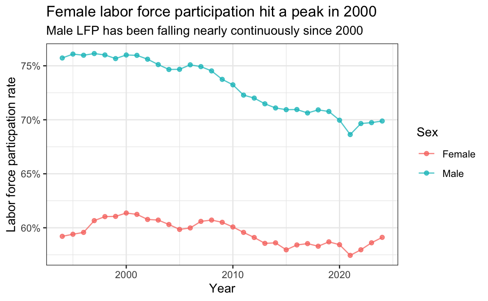
women |>
filter(!is.na(age)) |>
mutate(
over_25 = if_else(age != "< 25", ">= 25", age)
) |>
plot_mean_by_group_over_time(lfp_lgl, over_25) +
scale_y_continuous(labels = percent) +
labs(
title = "Younger women have participated less in the labor force since 2000",
subtitle = "The trend seems to be reversing in recent years, since COVID in 2020",
y = "Labor force particpation rate",
color = "Age group"
)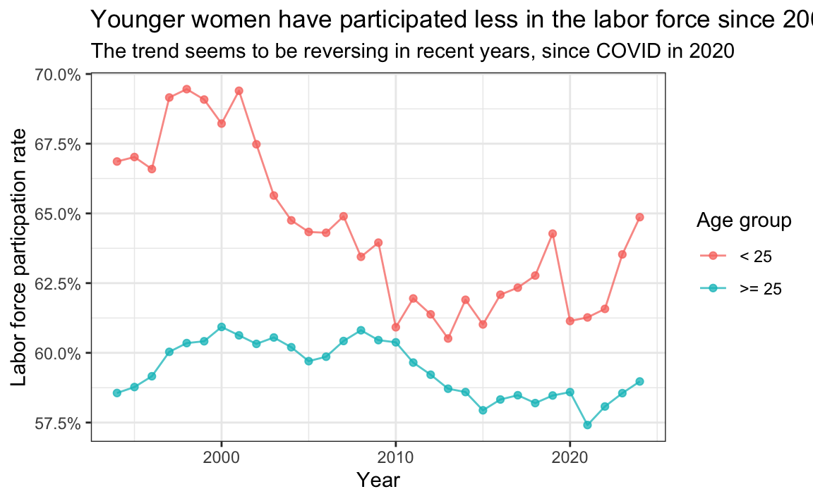
Question 2
Among women older than 25, which groups (race, age, income percentile, etc.) of people had the biggest changes in labor force participation since 1994? Please provide at least three graphs and/or tables to support your answer.
Create function to streamline code
chg_by_group <- function(data, var, group, initial_year, final_year) {
data |>
summarize(
.by = {{ group }},
initial = weighted.mean(
if_else(year == initial_year, {{ var }}, NA), wgt,
na.rm = TRUE
),
final = weighted.mean(
if_else(year == final_year, {{ var }}, NA), wgt,
na.rm = TRUE
),
chg = final - initial
) |>
arrange(desc(chg)) |>
gt() |>
opt_align_table_header(align = "left") |>
cols_align(align = "left", columns = {{ group }}) |>
cols_label(
initial = initial_year,
final = final_year,
chg = "Change"
) |>
fmt_percent() |>
sub_missing(columns = initial:chg, missing_text = "") |>
tab_options(table.align = "left")
}Examine changes by race
women_over_25 |>
plot_mean_by_group_over_time(lfp_lgl, race) +
facet_wrap(vars(race), ncol = 3) +
theme(legend.position = "none") +
scale_y_continuous(labels = percent) +
labs(
title = "Black women have the highest LFP rate",
subtitle = "The rate for white women (the largest group) is the lowest",
y = "Labor force participation rate",
color = "Race"
)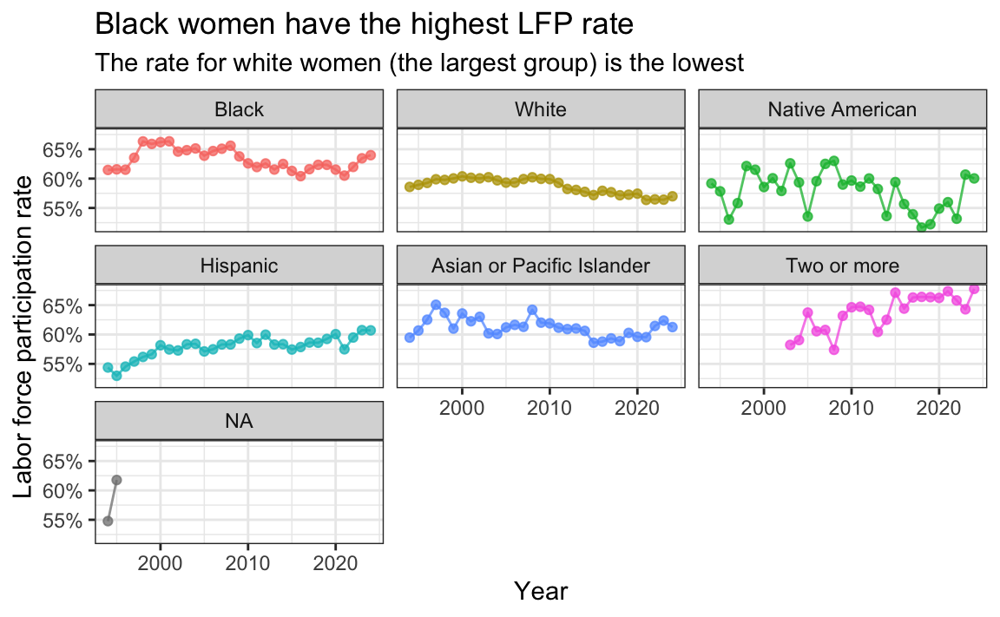
women_over_25 |>
chg_by_group(lfp_lgl, race, 1994, 2024) |>
cols_label(1 ~ "Race") |>
tab_header(
title = "Hispanic women experienced the biggest rise in LFP",
subtitle = "White women experienced the biggest fall"
)| Hispanic women experienced the biggest rise in LFP | |||
|---|---|---|---|
| White women experienced the biggest fall | |||
| Race | 1994 | 2024 | Change |
| Hispanic | 54.38% | 60.71% | 6.32% |
| Black | 61.47% | 63.99% | 2.52% |
| Asian or Pacific Islander | 59.47% | 61.26% | 1.79% |
| Native American | 59.18% | 60.03% | 0.85% |
| White | 58.58% | 56.99% | −1.60% |
| NA | 54.77% | ||
| Two or more | 67.76% | ||
Examine changes by age
women_over_25 |>
plot_mean_by_group_over_time(lfp_lgl, age) +
scale_y_continuous(labels = percent) +
labs(
title = "Women aged 25-54 have LFP rates approaching 80%",
subtitle = "Labor force participation declines quickly after age 55",
y = "Labor force participation rate",
color = "Age"
)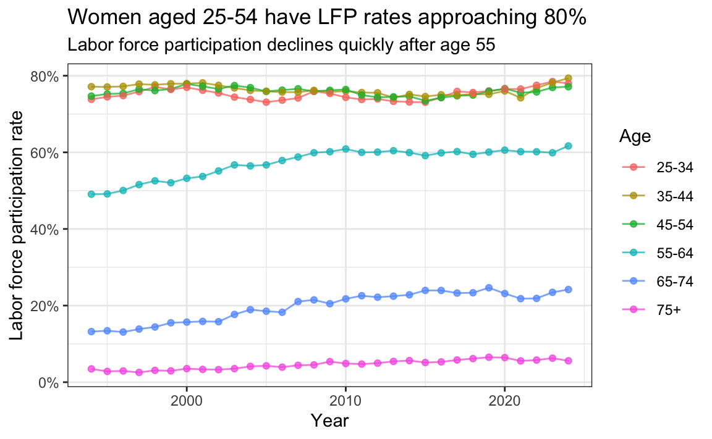
women_over_25 |>
chg_by_group(lfp_lgl, age, 1994, 2024) |>
cols_label(1 ~ "Age group") |>
tab_header(
title = "Working into old age has become increasingly common",
subtitle = "Women aged 55-74 experienced the biggest rise in LFP"
)| Working into old age has become increasingly common | |||
|---|---|---|---|
| Women aged 55-74 experienced the biggest rise in LFP | |||
| Age group | 1994 | 2024 | Change |
| 55-64 | 49.06% | 61.67% | 12.61% |
| 65-74 | 13.20% | 24.19% | 10.99% |
| 25-34 | 73.84% | 77.99% | 4.15% |
| 45-54 | 74.68% | 77.13% | 2.45% |
| 35-44 | 77.14% | 79.38% | 2.24% |
| 75+ | 3.46% | 5.58% | 2.12% |
Examine changes by income
women_over_25 |>
plot_mean_by_group_over_time(lfp_lgl, income_quantiles) +
scale_y_continuous(labels = percent) +
labs(
title = "Women in the highest income quintiles have the highest LFP rate",
subtitle = "The effect may be reciprocal as working also causes higher income",
y = "Labor force participation rate",
color = "Income quintile"
)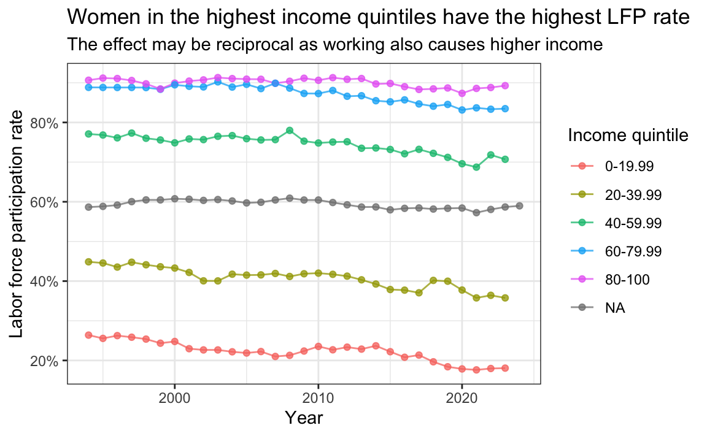
women_over_25 |>
# Since the 2024 data is not yet available, compare with the 2023 rate
chg_by_group(lfp_lgl, income_quantiles, 1994, 2023) |>
cols_label(1 ~ "Income quintile") |>
tab_header(
title = "The lowest earners experienced the biggest drop in LFP",
subtitle = "The highest quintile of female earners were relatively unaffected"
) |>
tab_footnote(
footnote = "The 2023 rate is used for comparison as 2024 income data is not yet available.",
locations = cells_column_labels(3)
)| The lowest earners experienced the biggest drop in LFP | |||
|---|---|---|---|
| The highest quintile of female earners were relatively unaffected | |||
| Income quintile | 1994 | 20231 | Change |
| NA | 58.66% | 58.68% | 0.02% |
| 80-100 | 90.65% | 89.28% | −1.37% |
| 60-79.99 | 88.84% | 83.48% | −5.37% |
| 40-59.99 | 77.10% | 70.71% | −6.39% |
| 0-19.99 | 26.38% | 18.06% | −8.32% |
| 20-39.99 | 44.86% | 35.77% | −9.09% |
| 1 The 2023 rate is used for comparison as 2024 income data is not yet available. | |||
Question 3
Use the data to examine trends among women older than 25 for each of the following factors from 1994 to 2024: (a) Wage and salary income (b) Social insurance income (c) Education attainment Based on these trends, what factors could be driving the patterns you found in Questions 1 and 2?
Create function to streamline code
plot_income_over_time_by_group <- function(data, income_var, group) {
data |>
filter({{ income_var }} != 0) |>
summarize(
.by = c(year, {{ group }}),
mean_income = weighted.mean({{ income_var }}, wgt, na.rm = TRUE)
) |>
filter(!is.na({{ group }})) |>
ggplot(aes(x = year, y = mean_income, color = {{ group }})) +
geom_line(alpha = 0.75) +
geom_point(alpha = 0.75) +
scale_y_continuous(labels = dollar) +
labs(x = "Year")
}Examine wage and salary income per woman earning an income
women_over_25 |>
plot_income_over_time_by_group(income) +
labs(
title = "Average earned income for income-earning women has increased",
subtitle = "Women earning an income earned about $20,000 more in 2020 than in 1994",
y = "Average earned income"
)Warning: There was 1 warning in `filter()`.
ℹ In argument: `!is.na()`.
Caused by warning in `is.na()`:
! is.na() applied to non-(list or vector) of type 'symbol'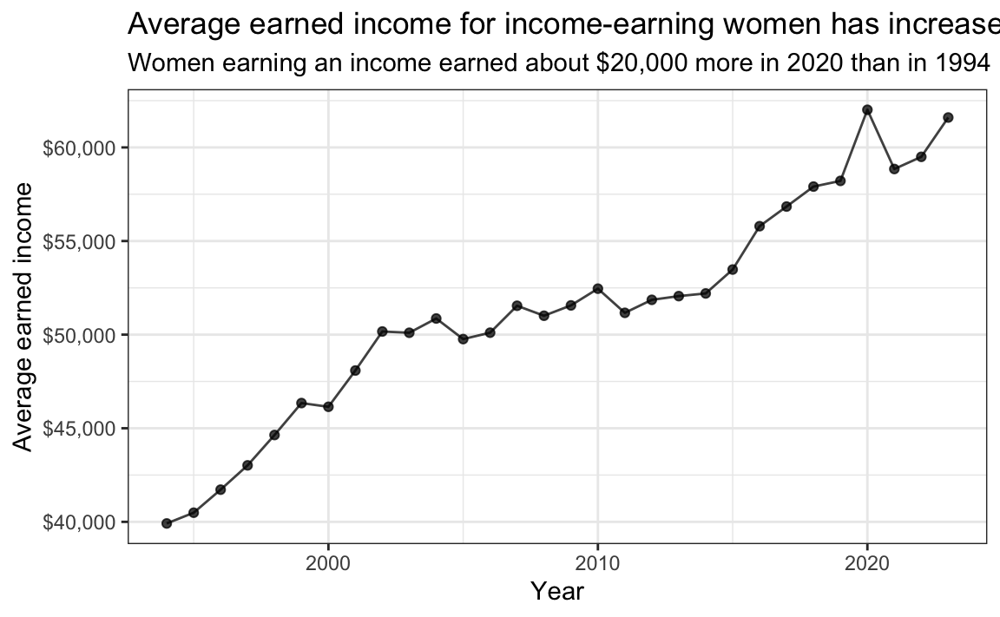
women_over_25 |>
plot_income_over_time_by_group(income, race) +
labs(
title = "Average earned income has increased across all races",
subtitle = "However, White and AAPI women have seen the largest increases",
y = "Average earned income",
color = "Race"
)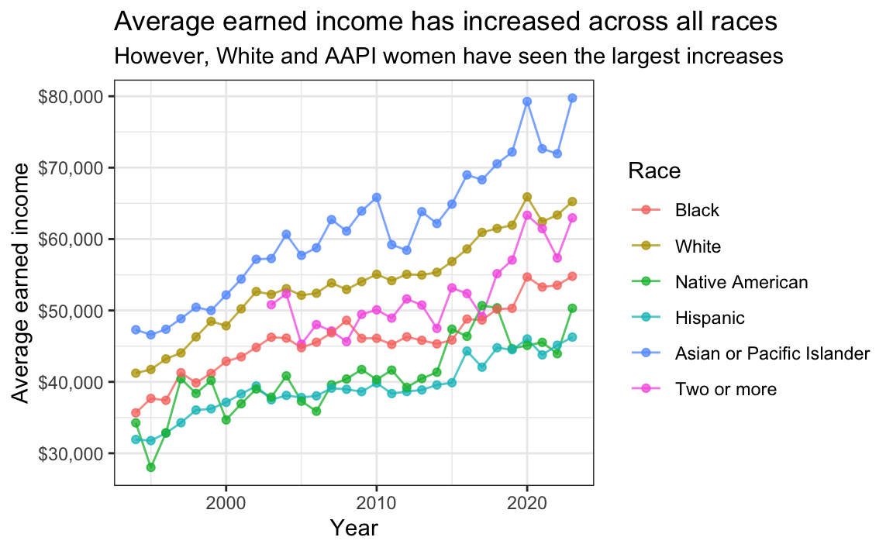
women_over_25 |>
plot_income_over_time_by_group(income, age) +
labs(
title = "Increases in income have been level across age groups",
subtitle = "The average working elderly woman is earning double what she earned in 1994",
y = "Average earned income",
color = "Age group"
)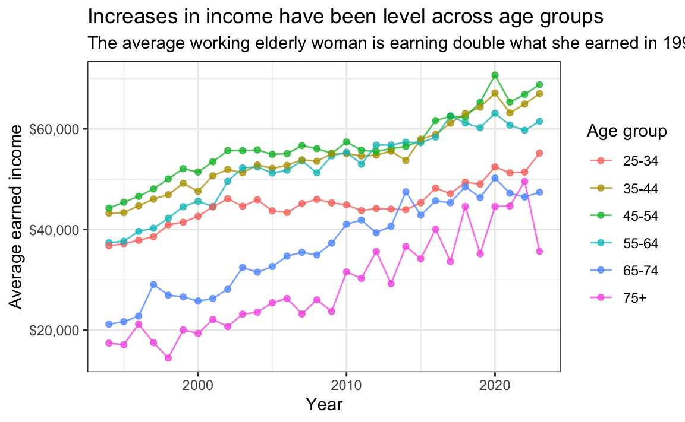
Average income has increased across the board. The most relevant observation is that income has increased the most for women aged 65 and older who are earning an income. This is not due to the effect of more elderly women working (those not working have been filtered out), but that the average working elderly woman is earning a higher income. This may be related to the increase in LFP for women over 65, with the logic that higher wages are associated with higher LFP, but it’s hard to say that this relationship holds for all groups. For instance, Asian or Pacific Islander women experienced a dramatic increase in average income but had almost no change in LFP since 1994.
Examine average income earned of each type
women_over_25 |>
mutate(
across(inctot:income, \(x) if_else(x == 0, NA, x))
) |>
summarize(
.by = year,
across(
.cols = inctot:income,
.fns = list(
mean = \(x) weighted.mean(x[!is.na(x)], wgt[!is.na(x)]),
median = \(x) Quantile(x[!is.na(x)], wgt[!is.na(x)], 0.5)
)
)
) |>
pivot_longer(
cols = inctot_mean:income_median,
names_sep = "_",
names_to = c("income_type", "stat"),
values_to = "value"
) |>
ggplot(aes(x = year, y = value, color = income_type, linetype = stat)) +
scale_y_continuous(labels = dollar) +
geom_line(alpha = 0.75) +
geom_point(alpha = 0.75, size = 1) +
theme(axis.title.y = element_blank()) +
labs(
title = "The typical values for all three kinds of income are increasing",
subtitle = "Incomes are skewed upward, and much more so for earned income",
x = "Year",
color = "Income type",
linetype = "Statistic",
caption = str_wrap(
"Mean and median income received of each type shown for individuals actually receiving that kind of income; individuals for which the given type of income is zero are excluded.",
width = 65
)
) +
scale_color_discrete(labels = c("Earned income", "Social insurance income", "Total income")) +
scale_linetype_discrete(labels = c("Mean", "Median"))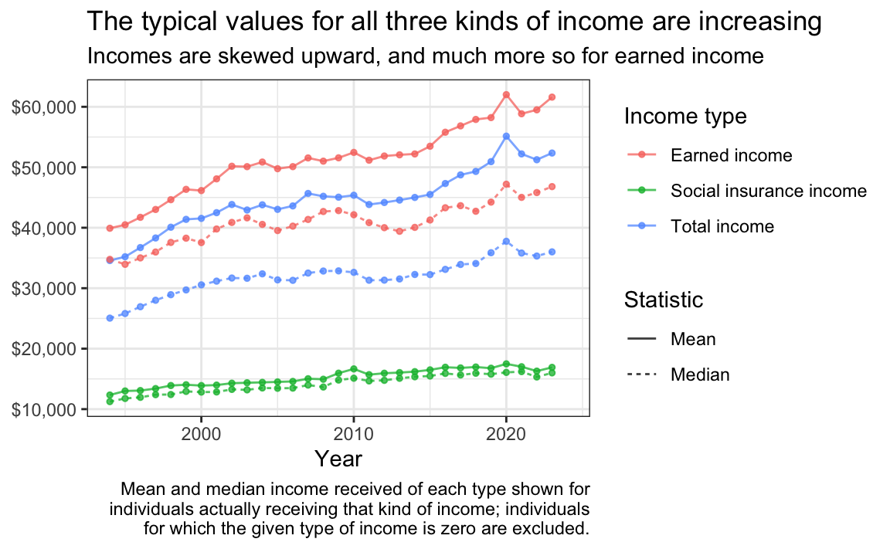
Examine education attainment
plot_props_over_time <- function(data, group) {
data |>
summarize(
.by = c(year, {{ group }}),
wgt_count = sum(wgt)
) |>
mutate(
.by = c(year),
prop = wgt_count / sum(wgt_count)
) |>
ggplot(aes(x = year, y = prop, color = {{ group }})) +
geom_line(alpha = 0.75) +
geom_point(alpha = 0.75) +
labs(x = "Year", y = "Proportion") +
scale_y_continuous(labels = percent)
}
women_over_25 |>
plot_props_over_time(education) +
labs(
title = "Higher education levels are rising",
subtitle = "Having a bachelor's or master's degree is increasingly common",
color = "Education level"
)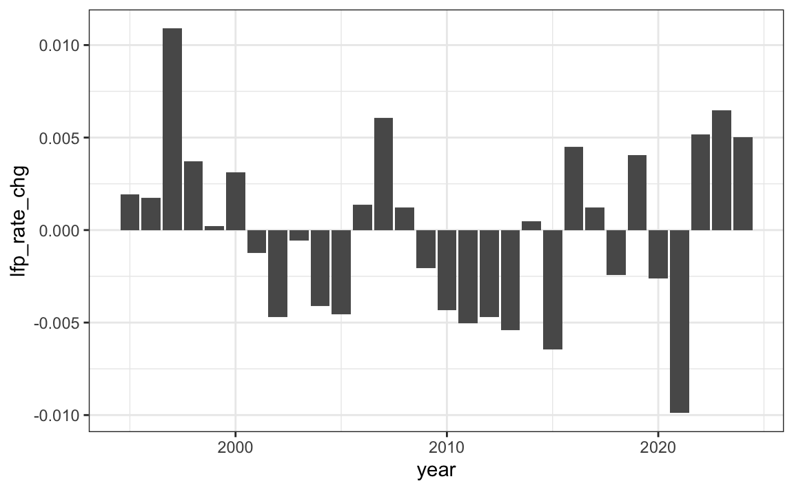
women_over_25 |>
plot_mean_by_group_over_time(college_lgl) +
scale_y_continuous(labels = percent) +
labs(
title = "Higher education increasing among women over 25",
subtitle = "Rate of having a college degree has doubled since 1994",
y = "Proportion with college degree"
)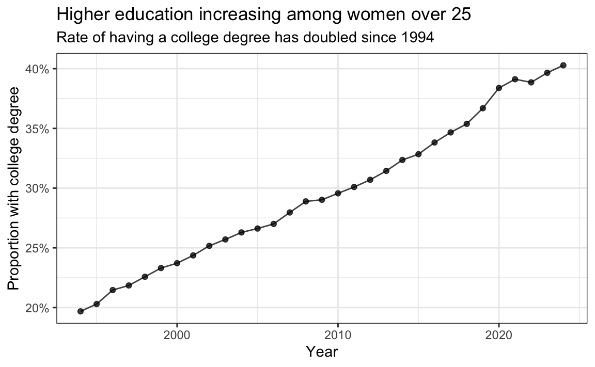
women_over_25 |>
plot_mean_by_group_over_time(college_lgl, race) +
scale_y_continuous(labels = percent) +
labs(
title = "Increase in higher education is about equal across race",
subtitle = "Thus, the racial gap persists over time",
y = "Proportion with college degree",
color = "Race"
)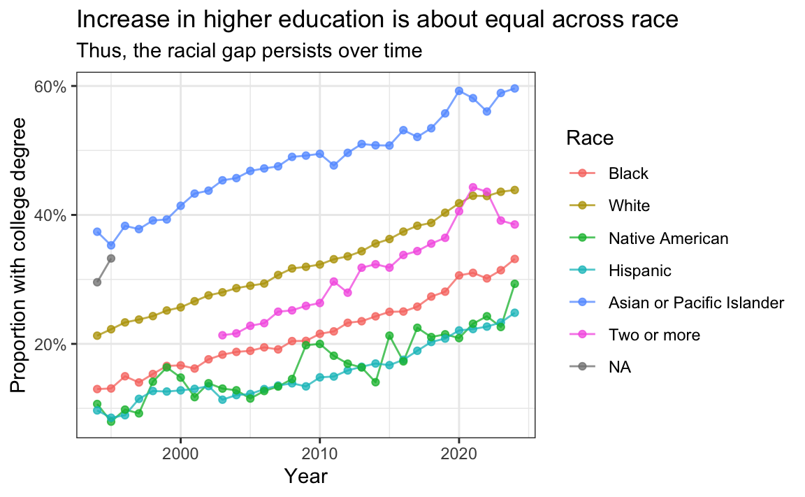
women_over_25 |>
plot_mean_by_group_over_time(college_lgl, age) +
scale_y_continuous(labels = percent) +
labs(
title = "The largest increases in education are in older groups",
subtitle = "The rate for people 75+ has nearly tripled since 1994",
y = "Proportion with college degree",
color = "Age group"
)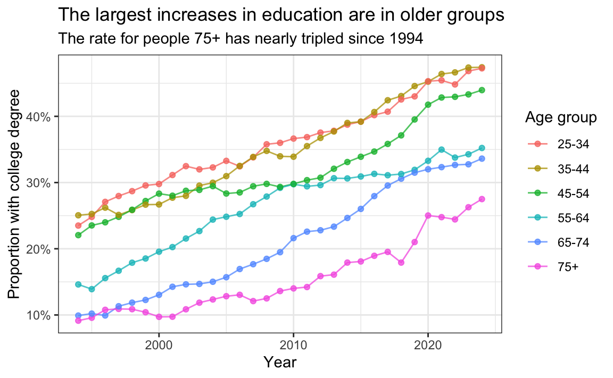
The rate of having a college degree is increasing over time for all races and ages. Women aged 75+ seem to have a comparably larger increase in the rate of having a college degree, but the effect seems small.
In conclusion for this question, wages, social insurance income, and education attainment are all increasing for most groups of women during the period since 1994. It is unclear, however, how this might be driving the overall trend in women’s LFP. It does seem like there may be a connection between higher wages and education attainment for older women and their relatively large increase in LFP.
Question 4
Between 1994 and 2024, which year had the steepest increase in female labor force participation relative to the previous year? What factors do you think are driving this pattern? Support your answers by using the data, referencing major events that happened around this time period, and/or citing previous studies.
Calculate year-over-year changes in female LFP
women_lfp_rate_chg <- women |>
summarize(
.by = year,
lfp_rate = weighted.mean(lfp_lgl, wgt)
) |>
mutate(
lfp_rate_chg = lfp_rate - lag(lfp_rate)
) |>
select(!lfp_rate) |>
filter(year != 1994) |>
arrange(desc(lfp_rate_chg))
bind_rows(
slice_head(women_lfp_rate_chg, n = 3),
slice_tail(women_lfp_rate_chg, n = 3),
) |>
gt() |>
fmt_percent(lfp_rate_chg) |>
cols_align(align = "left", columns = year) |>
cols_label(
year = "Year",
lfp_rate_chg = "Change in LFP rate"
) |>
opt_align_table_header(align = "left") |>
tab_options(table.align = "left") |>
tab_header(
title = "The year with the steepest increase in female LFP was 1997",
subtitle = "This may line up with the peak of the economic boom of the 1990s, which was followed by the 2000s recession; the largest decline in 2021 also roughly lines up with COVID"
)| The year with the steepest increase in female LFP was 1997 | |
|---|---|
| This may line up with the peak of the economic boom of the 1990s, which was followed by the 2000s recession; the largest decline in 2021 also roughly lines up with COVID | |
| Year | Change in LFP rate |
| 1997 | 1.09% |
| 2023 | 0.65% |
| 2007 | 0.61% |
| 2013 | −0.54% |
| 2015 | −0.64% |
| 2021 | −0.99% |
women_lfp_rate_chg |>
ggplot(aes(x = year, y = lfp_rate_chg)) +
geom_col() +
labs(
title = "Large changes in LFP seem to line up with economic cycles",
subtitle = "The recessions in 2000, in 2008, and during COVID all seem to appear here",
y = "Change in LFP rate",
x = "Year"
)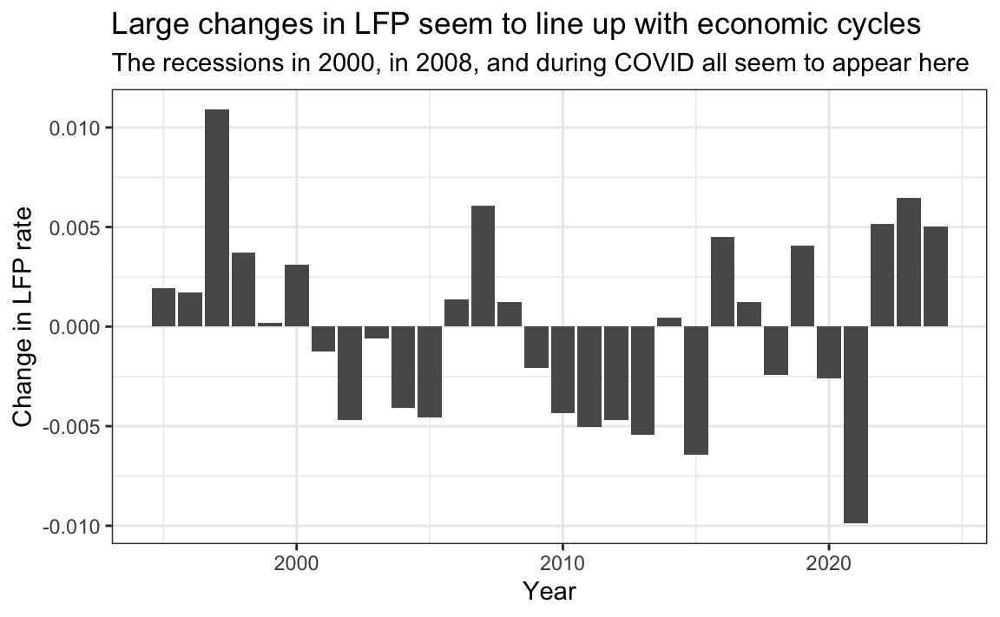
Question 5
How has labor force participation for college-educated and not college-educated women evolved since 1994? Please provide graphs and/or tables to support your answer.
Examine LFP by college education status
women |>
plot_mean_by_group_over_time(lfp_lgl, college) +
scale_y_continuous(labels = percent) +
labs(
title = "Women with a college education have higher LFP rates",
subtitle = "However, the decline in LFP for college-educated women has also been higher",
y = "Labor force participation rate",
color = "College status"
)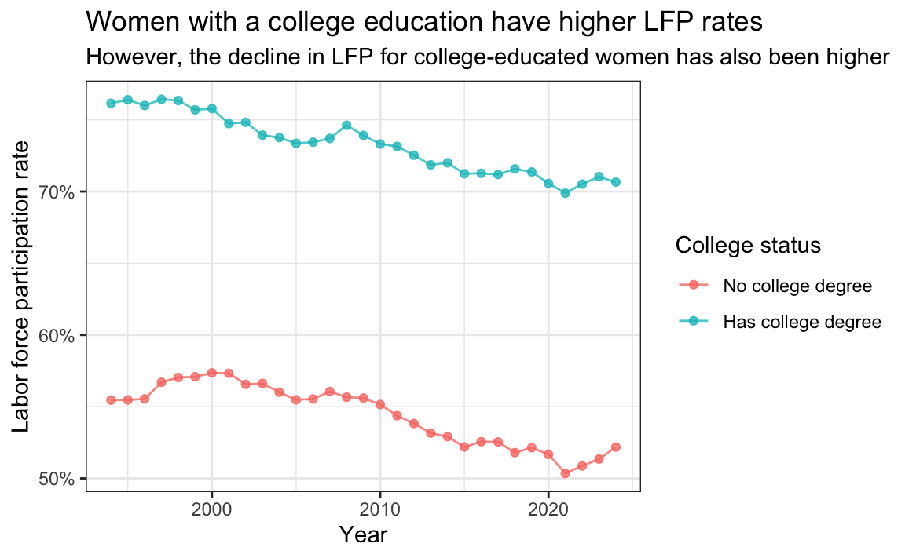
College-educated women experienced a slightly larger drop in LFP since 1994 than women without a college education. Furthermore, the drop for college-educated women has been more or less monotonic, with a steady decrease almost every year. The LFP rate for women without a college education, however, initially rose until the early 2000s, after which it experienced a sharper decline.
Question 6
Create an alternative measure of labor force participation that excludes individuals from the labor force if they are self-employed in their main job (lfp = 0 if self-employed in main job). Using the new measure, describe how labor force participation for college-educated and not college-educated women has evolved since 1994. Please provide graphs and/or tables to support your answer.
Create function to streamline code
compare_lfp_rates_by_group <- function(data, group) {
data |>
summarize(
.by = c(year, {{ group }}),
lfp_rate = weighted.mean(lfp_lgl, wgt),
lfp_rate_excl_self = weighted.mean(lfp_lgl_excl_self, wgt)
) |>
pivot_longer(
cols = c(lfp_rate, lfp_rate_excl_self),
names_to = "lfp_type",
values_to = "lfp_rate"
) |>
ggplot(aes(x = year, y = lfp_rate, color = {{ group }}, linetype = lfp_type)) +
geom_line(alpha = 0.75) +
geom_point(alpha = 0.75, size = 1) +
scale_y_continuous(labels = percent) +
labs(
y = "LFP rate",
x = "Year",
linetype = "LFP methodology"
) +
scale_linetype_discrete(labels = c("Standard", "Exclude self-employment"))
}Examine alternative measure of LFP by college education status
women |>
compare_lfp_rates_by_group(college) +
labs(
title = "Alternative LFP measure is everywhere lower than the standard",
subtitle = "Pattern of evolution of LFP by college status is not materially different",
color = "College status"
)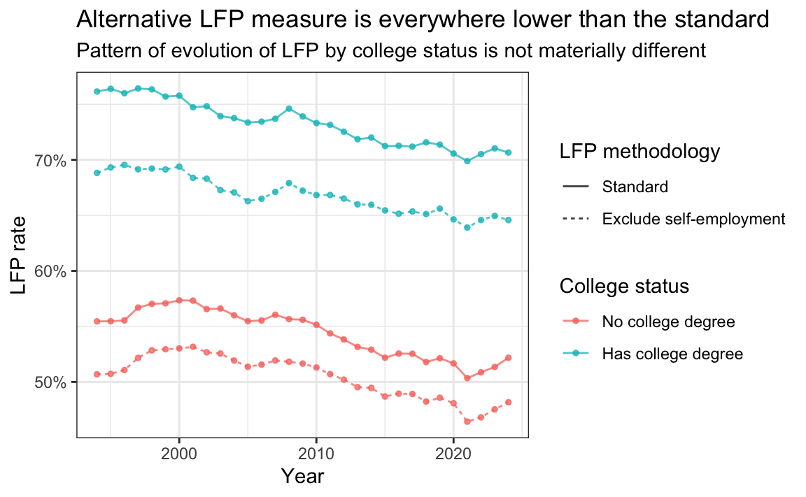
The effect of changing to the alternative measure is larger for women with a college degree than for women without a college degree, indicating that a relatively larger proportion of women with a college degree are self-employed. This seems to make sense given that self-employed workers are usually in a skilled or white-collar profession. However, any effects of the recent rise of the gig economy do not seem to be captured in the data, perhaps because they are small relative to the magnitude of the labor force as a whole.
Question 7
How does our labor market analysis change when we use the new measure? Which measure do you prefer? Explain.
Examine alternative measure of LFP for different cross sections of the data
women |> compare_lfp_rates_by_group()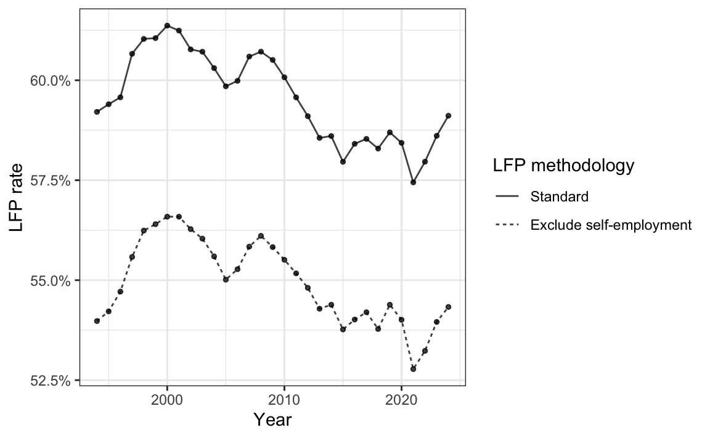
women |>
compare_lfp_rates_by_group(age) +
labs(color = "Age group")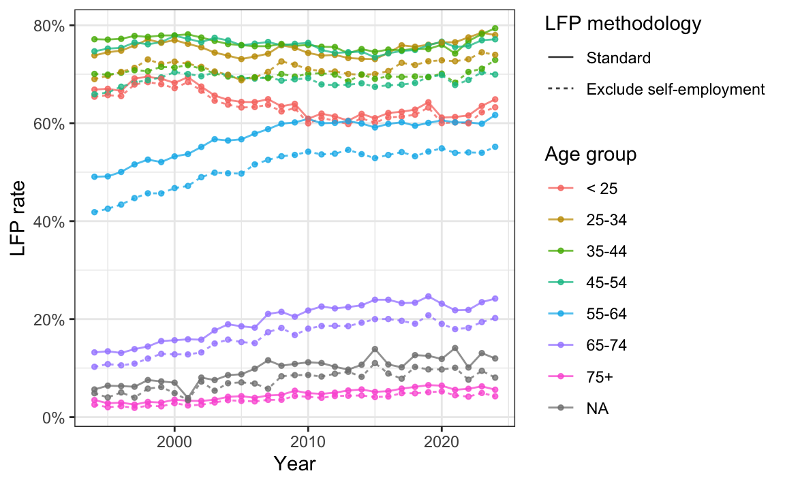
women |>
compare_lfp_rates_by_group(race) +
facet_wrap(vars(race), ncol = 3) +
labs(color = "Race")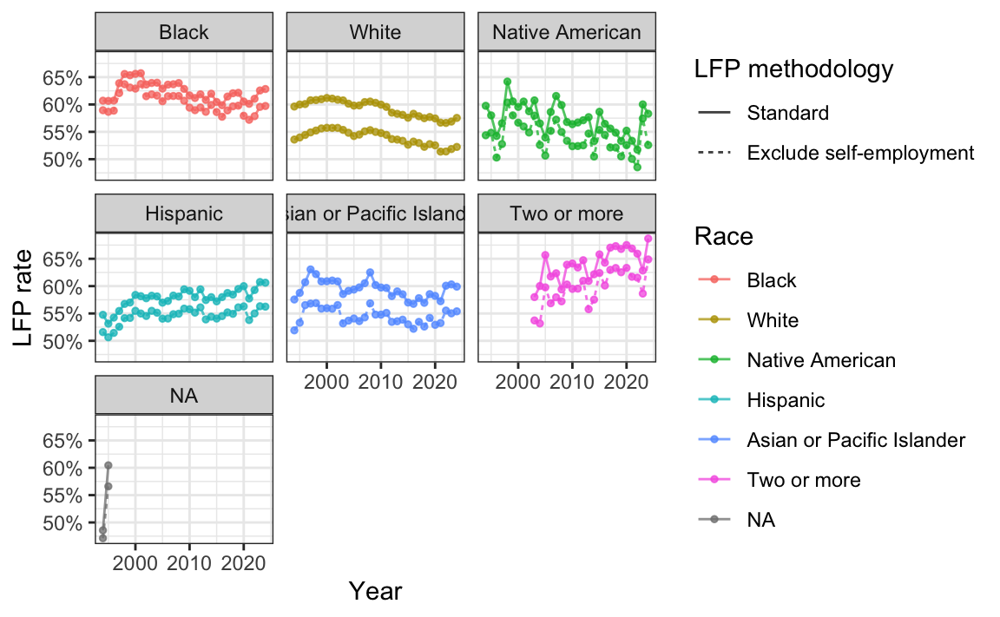
women |>
compare_lfp_rates_by_group(income_quantiles) +
labs(color = "Income quintile")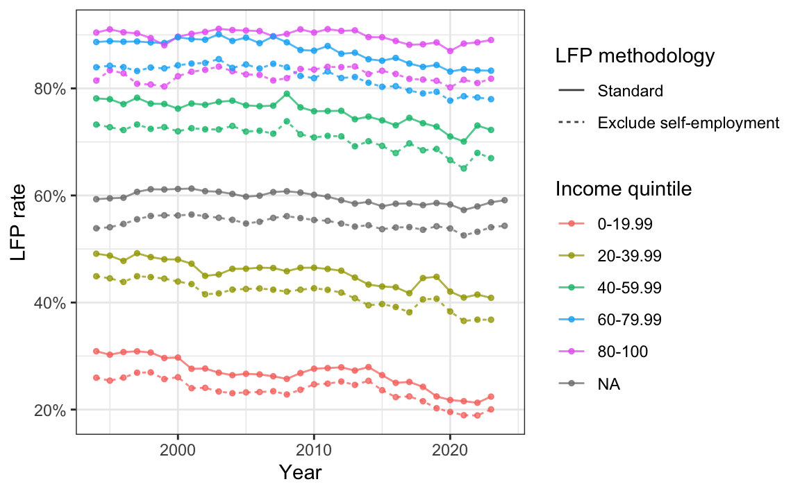
Without analyzing the effect of changing to the new measure on different cross sections of the data, it is hard to say for certain, but it seems that the effect is simply to lower LFP across the board, albeit in differing magnitudes for different demographics.
At the end of the day, the way labor force participation should be measured depends on the goals of the economic analyst. If LFP is simply intended to show how much of the population is working, then self-employment should clearly count as employment because self-employed people are indeed working. In this case, due to the differing effects on different demographics, filtering out self-employed people would distort the numbers.
However, there could be applications of LFP for which it makes sense to filter out self-employed people. Perhaps the self-employed are less likely to try to find a new job if they lose work, or are otherwise unwilling to work if not for themselves; then, it might make sense to exclude them if the goal is to use LFP as a proxy for the size of the active labor market.
Part 2: Telework
The most important concept here is that had_telework was created while the data was grouped by cpsidp. This means that any individual who had telework during COVID is categorized as having had telework for all years. The point is to be able to follow the same individuals (who had telework during COVID) and observe their outcomes post-COVID; the years before COVID can be disregarded into missing values later.
There is a flaw in this logic: since the data are presumably grouped, and each row is likely not an individual observation (as evidenced by the wgt variable), this “cohort” analysis will not be perfectly accurate as we may be following cohorts of groups, rather than cohorts of individuals. This problem will be ignored here for the sake of this exercise only.
Question 1
Since the rise of telework in 2020, how have wages, employment, and labor force participation changed for women who had telework from 2020-2024 and women who did not? Please provide at least three graphs and/or tables to support your answer.
It is unclear how telework during 2020 or after year-end 2022 would be inferred from the rest of the variables, so this question will be answered by comparing women who had telework during 2021-2022 due to COVID and women who did not have telework during 2021-2022 due to COVID (using the covid_telework field).
Examine labor market outcomes by teleworking status during COVID
plot_mean_over_time_by_telework <- function(data, var) {
data |>
summarize(
.by = c(year, had_telework),
mean = weighted.mean({{ var }}, wgt, na.rm = TRUE),
) |>
mutate(
had_telework = if_else(year <= 2019, NA, had_telework)
) |>
ggplot(aes(x = year, y = mean, color = had_telework)) +
geom_line(alpha = 0.75) +
geom_point(alpha = 0.75) +
labs(
x = "Year",
color = "Had telework?*",
caption = "* During 2021-2022 due to COVID."
) +
scale_color_discrete(labels = c("No", "Yes", "NA")) +
coord_cartesian(xlim = c(2016, 2024))
}
women |>
filter(income != 0) |>
plot_mean_over_time_by_telework(income) +
labs(
title = "Higher income for women who could telework",
subtitle = "About $40,000 difference in earnings into 2023",
y = "Mean earned income",
caption = "Note: Income-earners only.\n* During 2021-2022 due to COVID."
) +
scale_y_continuous(labels = dollar)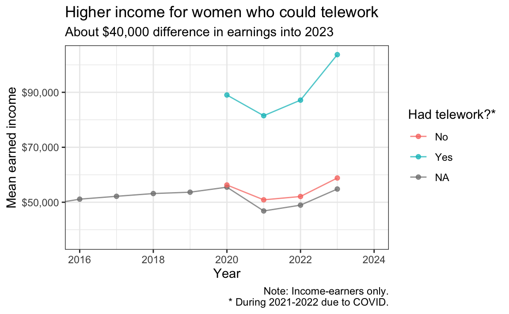
women |>
plot_mean_over_time_by_telework(employed_lgl) +
labs(
y = "Employment rate"
) +
scale_y_continuous(labels = percent)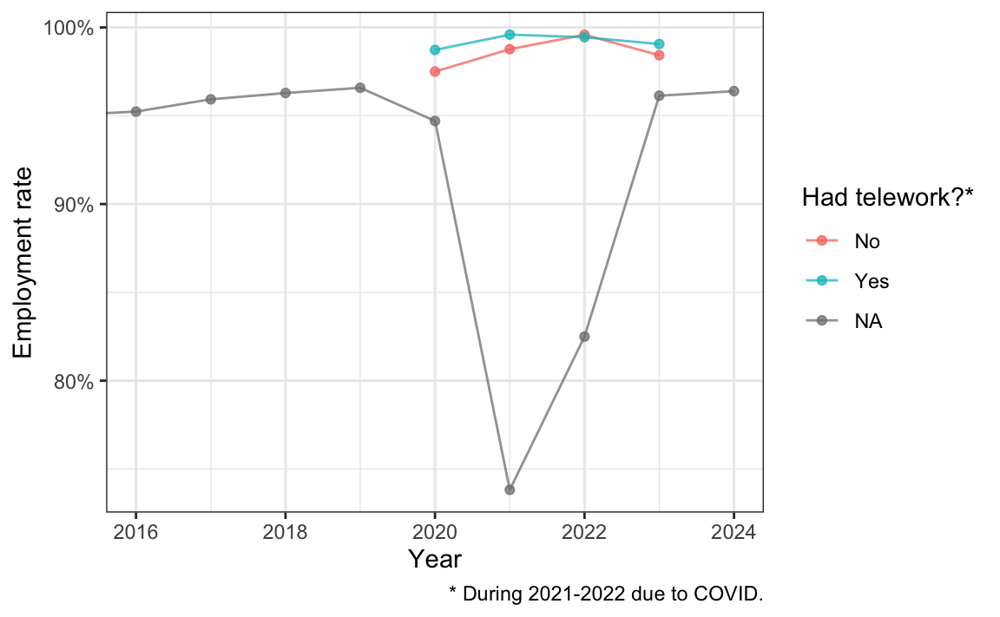
women |>
plot_mean_over_time_by_telework(lfp_lgl) +
labs(
y = "LFP rate"
) +
scale_y_continuous(labels = percent)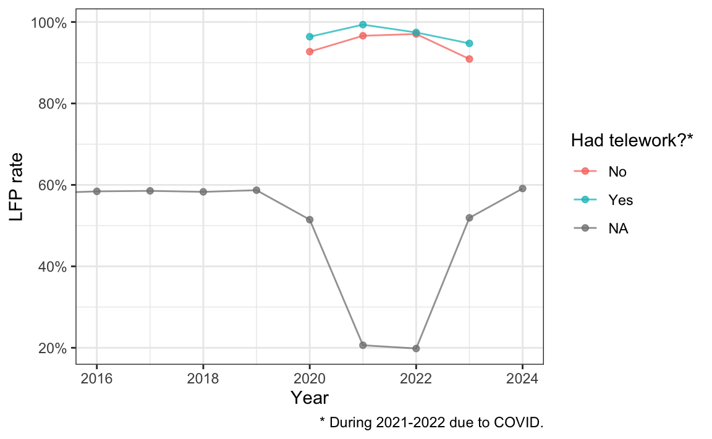
Women who were able to telework during COVID had markedly better incomes than women who were not able to telework, with the effect even expanding into 2023 after the pandemic had mostly ended.
The effects on employment and labor force participation are unclear because all respondents where covid_telework was not NA were both employed and in the labor force in that year. In other words, all respondents categorized as “Yes” or “No” in the above charts were both employed and in the labor force when the answer was recorded. When the group/mutate calculations are made by ID, it becomes clear that some women who teleworked in 2021 did not in 2022, and vice versa, causing employment and LFP to be less than 100% in the charts. At face value, it seems that having telework is related to higher employment and labor force participation, but due to the way the data were collected, this conclusion is likely flawed.
Question 2
For which groups of women older than 25 was telework due to the pandemic most common in 2021? Based on these patterns, what can you infer about the relationship between economic well-being and the ability to telework between 2021? Please provide at least three graphs and/or tables to support your answer.
Examine 2021 teleworking rates for women older than 25 by demographic factors
plot_mean_by_group_in_year <- function(data, var, group, in_year, sort = FALSE) {
data <- data |>
filter(year == in_year) |>
mutate(
group = {{ group }}
) |>
summarize(
.by = group,
mean = weighted.mean({{ var }}, wgt, na.rm = TRUE)
)
if (sort) {
data <- data |> mutate(group = fct_reorder(group, mean))
}
data |>
ggplot(aes(x = mean, y = group)) +
geom_point()
}
women_over_25 |>
plot_mean_by_group_in_year(covid_tw_lgl, race, 2021, TRUE) +
labs(
title = "AAPI women had highest teleworking rate",
subtitle = "White and mixed women also had high rates",
y = "Race",
x = "Teleworking rate in 2021"
) +
scale_x_continuous(labels = percent)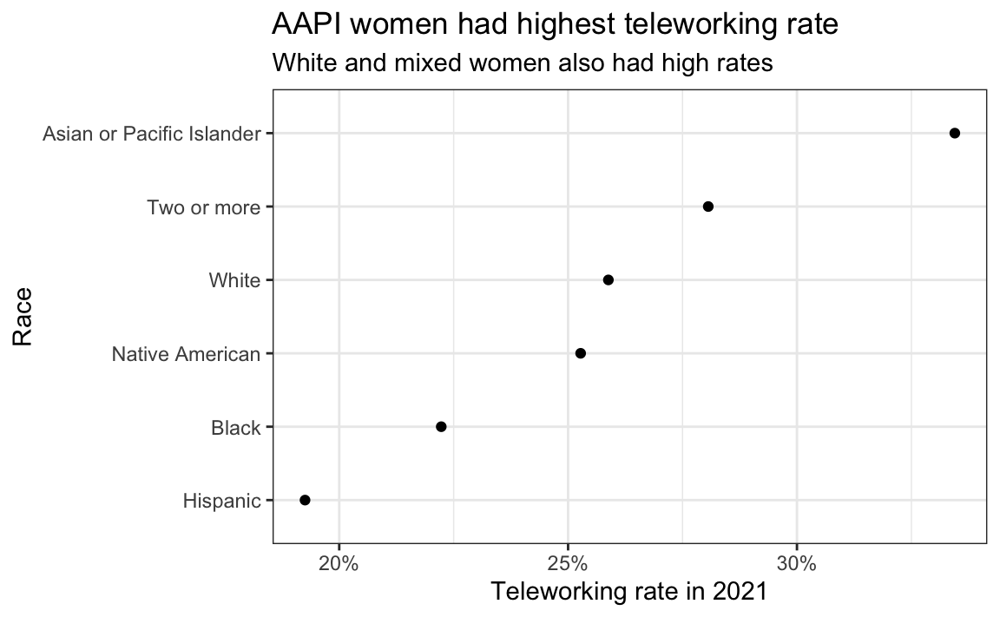
women_over_25 |>
plot_mean_by_group_in_year(covid_tw_lgl, age, 2021) +
labs(
title = "Younger women teleworked more",
subtitle = "Monotonic negative relationship between age and teleworking rate",
y = "Age group",
x = "Teleworking rate in 2021"
) +
scale_x_continuous(labels = percent)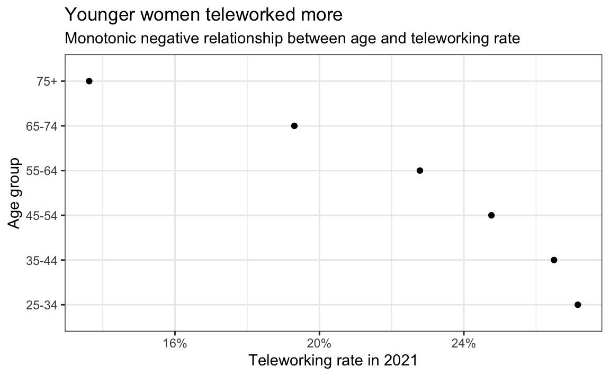
women_over_25 |>
plot_mean_by_group_in_year(covid_tw_lgl, education, 2021) +
labs(
title = "Educated women teleworked more",
subtitle = "Women with a college degree had 10-20% higher rates",
y = "Education level",
x = "Teleworking rate in 2021"
) +
scale_x_continuous(labels = percent)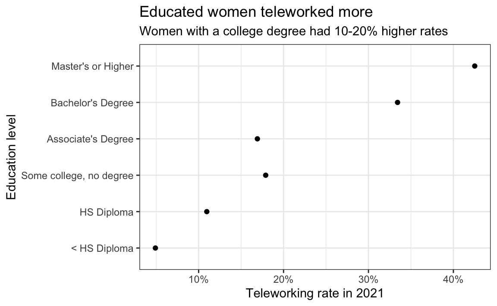
Although a direct observation of the relationship between income and teleworking rate is unavailable in the data, the aforementioned demographic factors are highly correlated with income. It can therefore be inferred that women with higher incomes were much more likely to be able to telework in 2021.
Question 3
Predict what trends in wages, employment, and labor force participation for college-educated women from 2020 to 2024 would have looked like if telework was not an option. What does this tell you about the economic impacts of telework during the COVID-19 pandemic? Please support your answer with graphs and/or tables.
Hint: Look at trends from previous years that had similar economic contexts. Also, feel free to explore the variables you haven’t used yet.
Examine labor market outcomes for college-educated women by teleworking status during COVID
summary_college_women_by_telework <- women |>
filter(income != 0, college == "Has college degree") |>
summarize(
.by = c(year, had_telework),
mean_income = weighted.mean(income, wgt, na.rm = TRUE),
employment_rate = weighted.mean(employed_lgl, wgt, na.rm = TRUE),
lfp_rate = weighted.mean(lfp_lgl, wgt, na.rm = TRUE)
) |>
mutate(
had_telework = case_when(
year <= 2019 ~ NA,
year >= 2020 ~ !is.na(had_telework)
)
)
women |>
filter(college == "Has college degree", income != 0) |>
plot_mean_over_time_by_telework(income) +
labs(
y = "Mean earned income",
caption = "Note: Income-earning college graduates only.\n* During 2021-2022 due to COVID."
) +
scale_y_continuous(labels = dollar)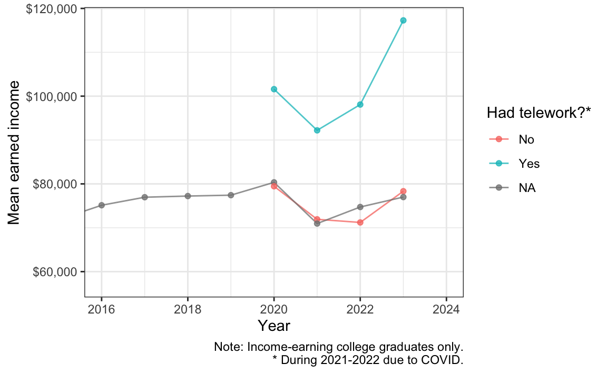
women |>
filter(college == "Has college degree") |>
plot_mean_over_time_by_telework(employed_lgl) +
labs(
y = "Employment rate",
caption = "Note: College graduates only.\n* During 2021-2022 due to COVID."
) +
scale_y_continuous(labels = percent)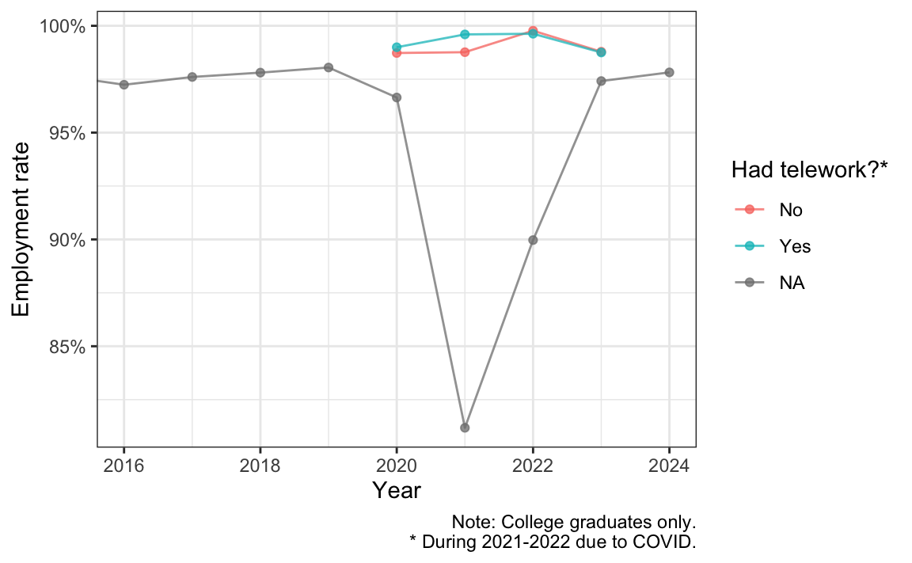
women |>
filter(college == "Has college degree") |>
plot_mean_over_time_by_telework(lfp_lgl) +
labs(
y = "LFP rate",
caption = "Note: College graduates only.\n* During 2021-2022 due to COVID."
) +
scale_y_continuous(labels = percent)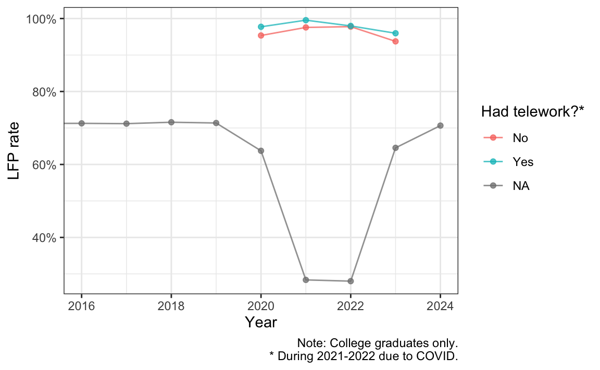
Under this simple analysis (not attempting to consider a counterfactual), telework caused positive economic impacts for college-educated women during and after the pandemic. Under the assumption that the complete absence of telework during COVID would have caused all college-educated women to experience the same effects as those college-educated women without telework actually experienced during COVID, we can say that the difference between the blue and red lines in the above charts represents the impacts of telework. Incomes were higher, employment rates were slightly higher, and LFP rates were higher as a result of telework. Of course, this analysis is caveated in the same way as in the answer to Question 1.